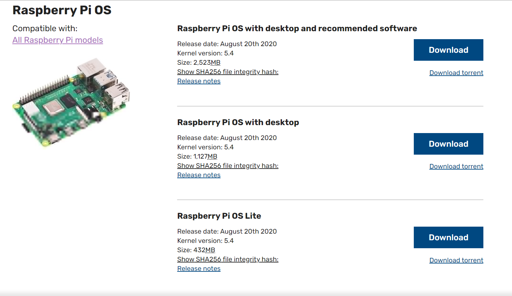
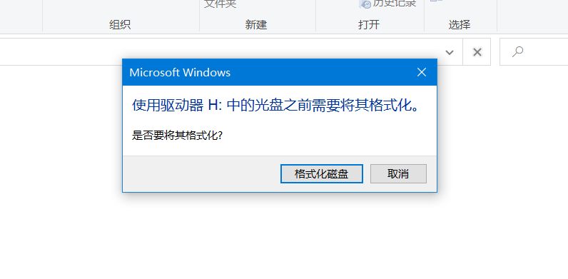
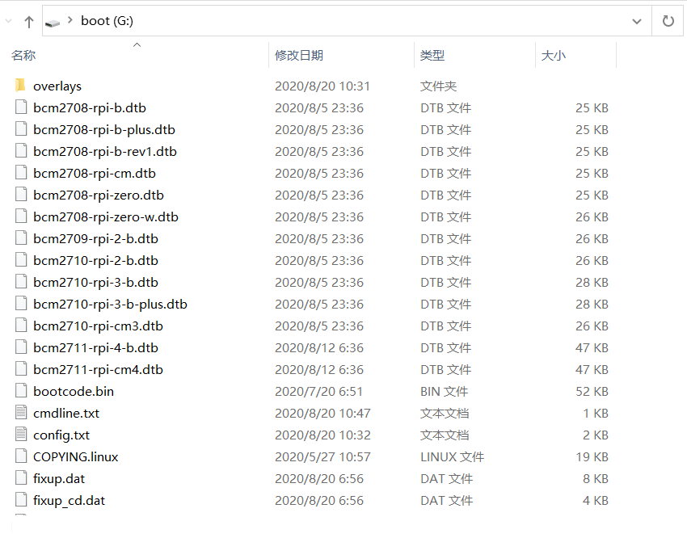
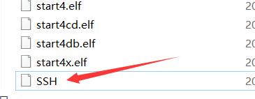
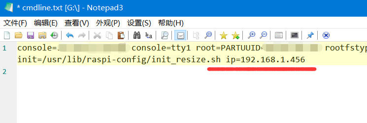
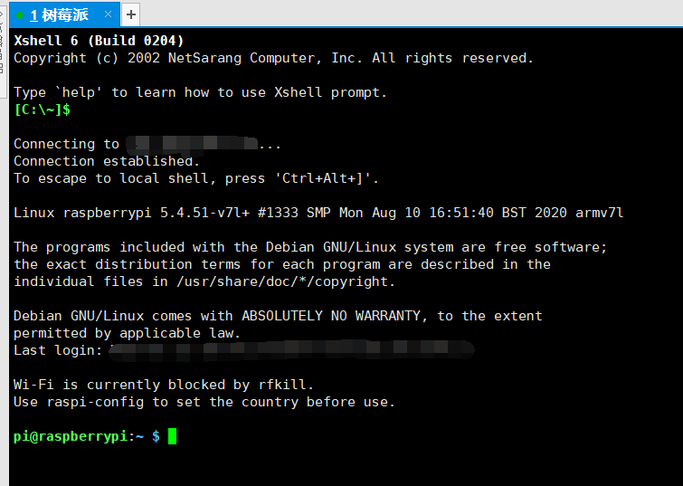

树莓派-无显示器安装系统
目录
我一般用树莓派当服务器用，因此一般不安装界面，直接安装最简版，但是正常的安装过程需要把树莓派做好后再连接一个显示器进行配置。下面整理了不用再连接显示器进行配置使用的方法。
1. 安装树莓派
1.2. 下载最新的树莓派安装镜像
国内不建议用官网给的那个工具安装，实在慢的没谱。建议直接下载 镜像

Figure 2. 树莓派镜像
因为我不用界面，下载的那个最小的，这里可以根据需要选合适的下载。
2. 镜像制作
-
把sd卡通过读卡器接入电脑
-
在 etcher 工具里面点击 Flash from file，选择刚下载好的树莓派官网镜像（zip格式，不用解压）
-
在 etcher 工具里选择刚插入的sd卡
-
点击 flash 会自动刷入，直至结束，结束后会自动退出sd卡
| 如果使用的是windows系统，写好的sd卡重新插入会有几个盘不能读取，会跳出是否格式化，这里点击 取消! |

Figure 3. 这里取消
3. 无显示器配置
重新插入sd卡，注意不要格式化任何盘。
此时会有一个名称为 boot 的盘是可读写状态

Figure 4. 可配置盘
其实连接显示器主要是想设置2点
-
SSH连接
-
网络设置
只要设置好上面两点，即可开启远程连接
3.1. 开启SSH连接
只需在 boot 盘中加入一个空的名称为 SSH 的文件即可

Figure 5. 开启SSH
| 这里注意不要有扩展名什么的，如果 windows 设置了已知扩展名隐藏，建议打开 |
3.2. 网络IP设置
我直接连接的网线，因此要设置有线网卡的固定IP，这时编辑 boot 盘中的 cmdline.txt 文件

Figure 6. 添加静态IP
| 这里要注意空格的情况，两个参数之间有空格，参数内部，等号两侧无空格 |
| 无线设置需要添加 wpa_supplicant.conf 文件，网上有很多教程，这里就不写了 |
设置完成这些，配置基本就完成了。
下面可以把卡插入树莓派，然后开机连网线了。等十几秒后就可以测试用xshell等客户端进行连接了。
树莓派默认用户名：pi 密码： raspberry

Figure 7. xshell进入树莓派